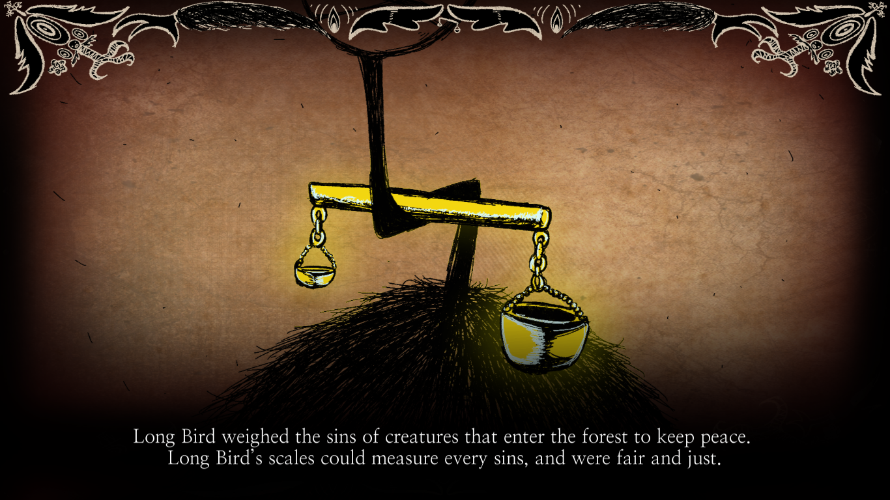

JUDGEMENT BIRD'S ENTRY
"Its scale would never neglect the weight of even the smallest sin."
Judgement Bird (O-02-62) - also known as "Long Bird" before Observation level 2 - is a tall bird Abnormality with long, skinny limbs and neck. His spherical body is covered with black feathers, along his arms/wings. His head is covered by bandages and he has 2 small white wings of red tips on the sides of his head. Balanced on his neck is a golden scale - which tips to one side. He used to be a sentinel of the Black Forest, where he was living with Big Bird and Punishing Bird. He was a fair judge and after hearing a prophecy, he used his golden balance to measure the sins of the creatures to protect the forest and keep the peace. But someone said, "What if the scales don't tip to any direction?".
He became worried, so he made that the balance only tip to one direction, to get the result in any circumstance. He used to have sparkling eyes which he could use to see through everything, but at one point, he gave his eyes to Big Bird to help him protect the forest. Long Bird covered his own eyes with ragged bandages, but still wanted to protect the forest, and after some time, he began to lose his glossy feathers due to the sunlight. As time progressed, the Black Forest started to become saturated by darkness, bad rumors, and daily fights. As a solution, the three birds merged their strengths to become a new bird to protect the forest, but it caused chaos instead, making all the creatures to leave in fear of the forest. Is unknown when they decided to separate from themselves.